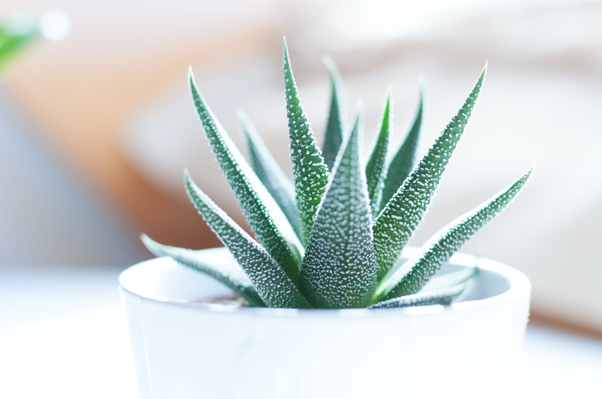
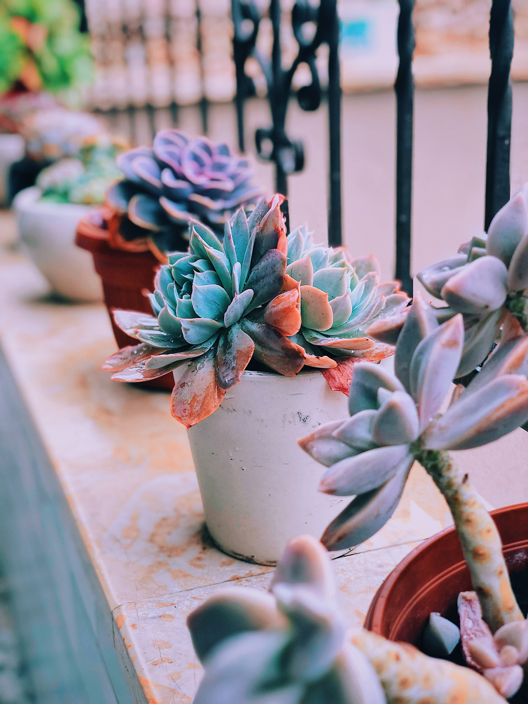
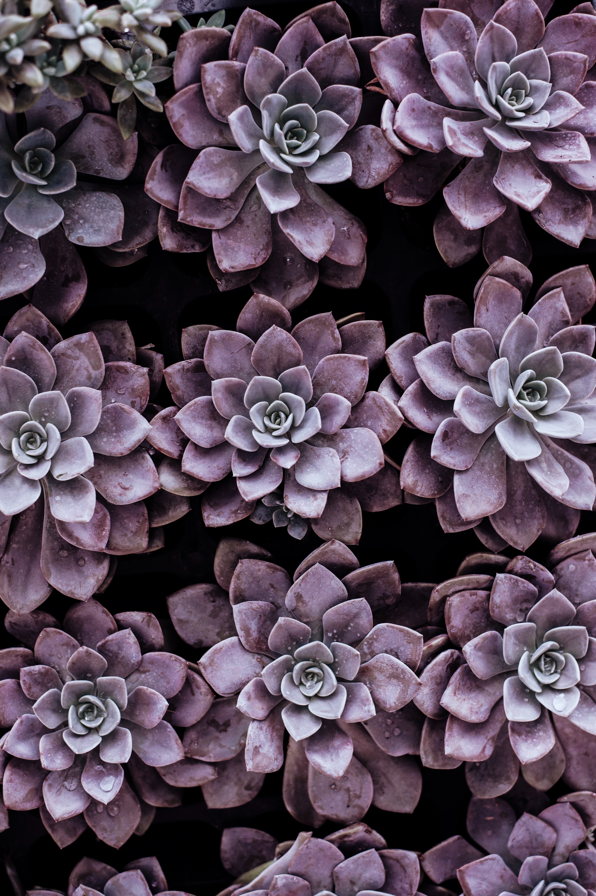
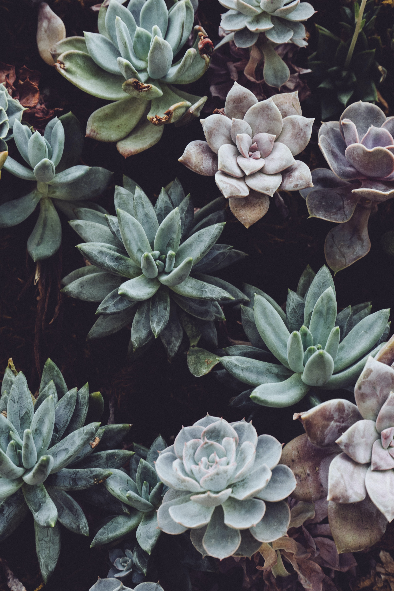
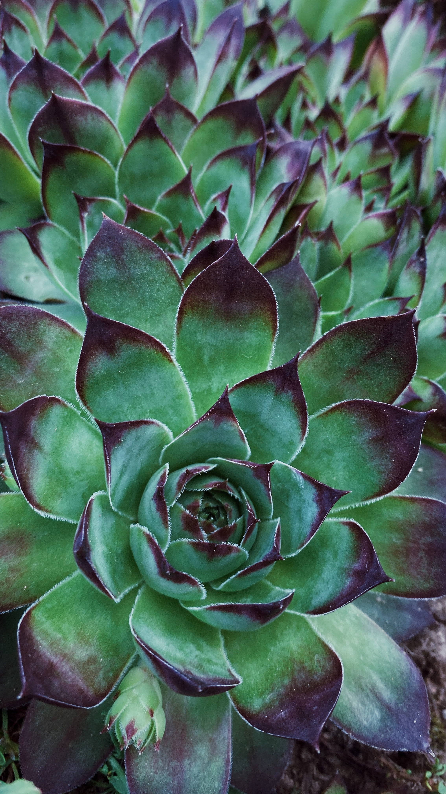
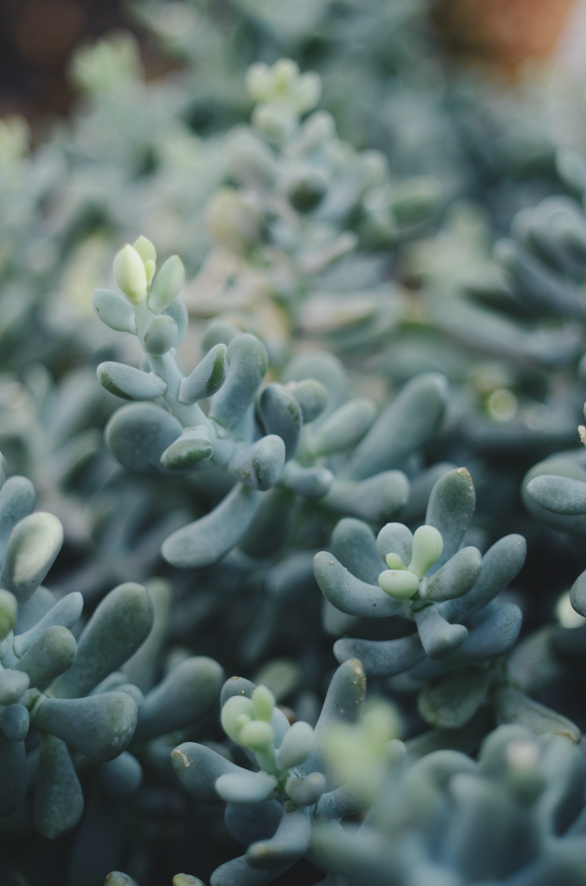

Apa Itu Sukulen?

Tumbuhan sukulen, juga dikenal sebagai sukulen, adalah tumbuhan dengan organ yang menebal, berdaging, dan membengkak, biasanya untuk menyimpan air di iklim atau kondisi tanah kering.
Warna Warni Sukulen







Yuk, Mengenal Sukulen!
Sukulen adalah tanaman hias yang memiliki beragam jenis dan memiliki bentuk yang unik, bentuknya menyerupai bunga dan warna nya sangat bervariasi. Sukulen bisa dijadikan sebagai tanaman penghias ruangan, atau bahkan bisa dibudidayakan lohhh. Banyak nya penghobi sukulen di era pandemi ini membuat bisnis budidaya sukulen menjadi sebuah pekerjaan yang cukup menguntungkan.
Oh iya, info penting juga nih, ternyata kaktus itu termasuk sukulen lohhh. Salah satu ciri sukulen itu adalah bisa menyimpan air, dan kaktus memenuhi kriteria tersebut.
Perawatan sukulen pun sangat mudah lohhh, media tanam yang pas untuk sukulen adalah media tanam yang porous. Ciri dari media tanam yang porous adalah ketika kita menyiram air ke media tersebut air nya tidak akan menggenang terlalu lama. Sehingga air akan langsung keluar melewati lubang pot. Penyiraman untuk sukulen pun tidak perlu kita lakukan setiap saat, kita hanya perlu menyiram nya seminggu 2 kali, atau bahkan seminggu sekali, semua itu tergantung keadaan media tanamnya, bisa dibilang kita perlu menyiram sukulen hanya pada saat media tersebut benar-benar kering.